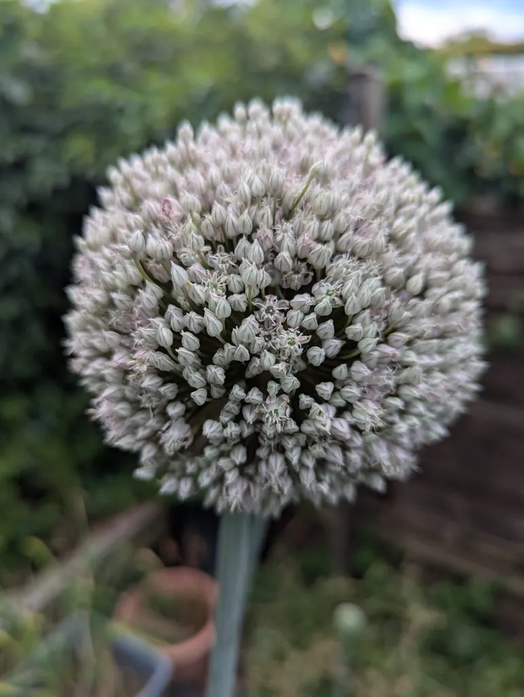

农作物与经济植物 · 植物界
韭葱 Allium porrum

石蒜科二年生草本，叶扁平不中空、假茎粗长洁白，风味比大葱温和，是西餐汤品中的经典蔬菜之一。
- 分类
- 门被子植物门纲木兰纲目天门冬目科石蒜科属葱属
- 栖息环境
- 冷凉湿润的菜园与农田，喜光、耐寒、喜疏松肥沃土壤
- 地理分布
- 原产地中海沿岸与西亚，欧洲广泛栽培，中国各地有引种种植
- 保护级别
- 暂无评估；栽培作物
物种志
韭葱为石蒜科葱属二年生草本，株高 0.6–1 米，叶扁平带状，不中空，表面有纵沟，蓝绿色，呈“V”形对折。叶鞘层层抱合成粗长的白色假茎，直径 2–4 厘米。第二年抽生花葶，顶端着生球形伞形花序，花淡紫或白色，花期 5–6 月；蒴果开裂，种子黑色。
韭葱原产地中海沿岸与西亚，古埃及、古希腊已有栽培，是欧洲最重要的葱属蔬菜之一。它的风味比大葱温和、加热后带甜味，是法式“奶油韭葱汤”、苏格兰鸡汤与土豆炖菜的基础食材。栽培喜冷凉、阳光充足，耐寒性强，多用育苗移栽，生长期间需多次培土以延长白色假茎。食用前需掰开叶片冲洗泥沙，因层层叶鞘易藏土。
形态与习性
- 原产地地中海沿岸与西亚
- 株高0.6–1 米，叶扁平不中空
- 食用部位白色假茎与嫩叶，直径 2–4 厘米
- 用途奶油韭葱汤、炖菜、煎炒调味
- 栽培喜冷凉耐寒，育苗移栽，多次培土
- 采收假茎粗壮后连根拔起，可培土软化
趣味知识
- 韭葱的叶是扁平对折的，不像大葱那样中空圆筒，这是最直观的区别。
- 它加热后甜味明显，是法式奶油韭葱汤与苏格兰鸡汤的灵魂。
- 古希腊与古罗马人常把韭葱当作提神食物，尼禄据说爱吃韭葱。
- 叶片层层抱合极易藏沙，切前要纵向剖开、逐层冲洗。